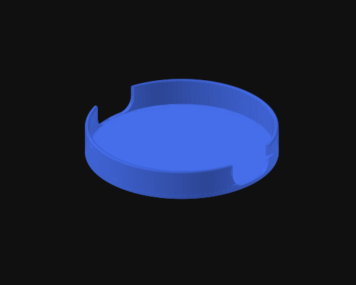
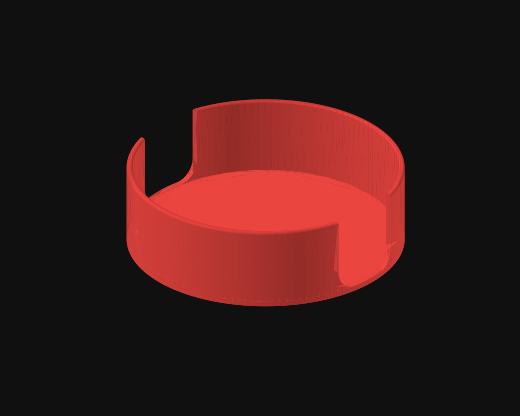

Start with your favorite thing.
Drop in a JPG or PNG. One coaster idea or a batch of up to 10. Your images stay in your browser.
A LITTLE ART. A LITTLE FILAMENT. ALL YOU.
That logo, doodle, or little obsession?
Turn it into a coaster you can actually make.
From image to SVG to print-ready 3MF.
Drop in a JPG or PNG. One coaster idea or a batch of up to 10. Your images stay in your browser.
Choose your colors, trace editable SVG paths, and smooth the outside edge for your coaster’s outline.
Add a solid base and a raised image. Export a 3MF with separate color parts, ready to assign filaments in your slicer.
THE COASTER-MAKING PART
Bring the artwork. Pick the palette.
We’ll turn the pixels into layers.
Add a JPG or PNG. Preview the SVG. Download your coaster’s 3MF.
A HOME FOR YOUR FINISHED COASTERS
Round or square. Four coasters or six. Pick a holder for your collection and download the STL to print alongside your coasters. These supplied designs are ready to import into your slicer.




Dimensions shown are the overall holder size. Check the internal clearance against your coaster dimensions in your slicer before printing.
FROM YOUR SCREEN TO YOUR BUILD PLATE
Start with a 100 mm coaster, a 2 mm solid base, and a 0.5 mm raised image. Change the dimensions in the maker to suit your idea.
The base and each image color are named parts in one aligned model.
Expand the model in Objects and assign a filament to each part.
Use your own printer settings. See the Bambu import notice